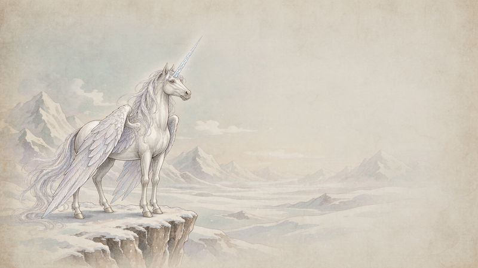
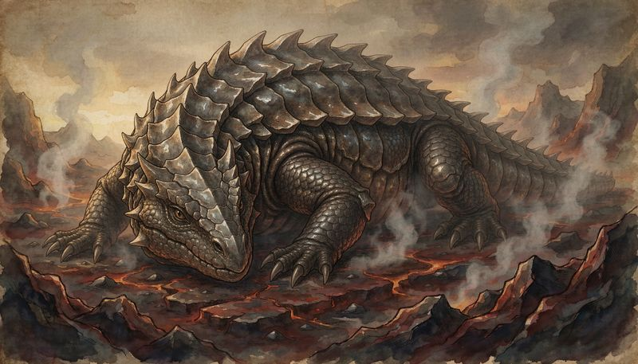
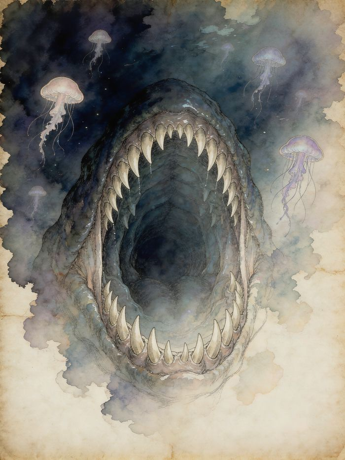
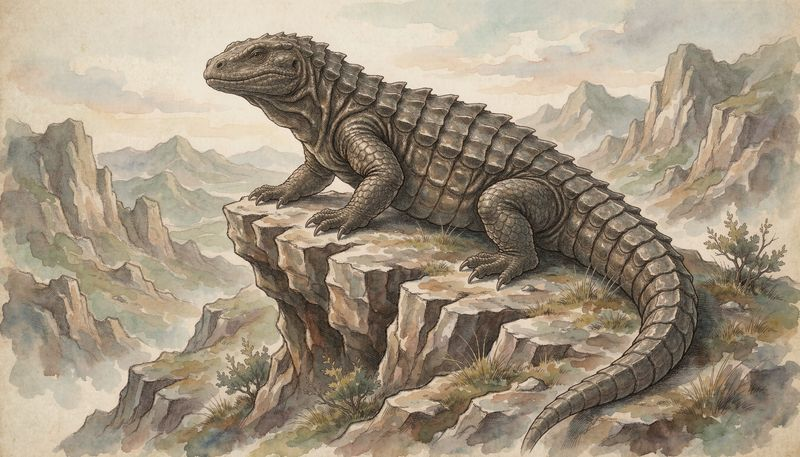

魔物图鉴




光幕之下 · 魔物图鉴
版本: v2.3（详细数据）+ v2.2（怪物名录） | 最后更新: 2026-09-26 | 说明: 含 300+ 魔物名录与详细数据
一、怪物名录（v2.2·按区域与阶位）
# 总计: 303种
# 低阶: 193种 | 中阶: 97种 | 高阶: 31种
# 光幕之下 · 魔物图鉴 v2.2（去重版）
# 最后更新: 2026-09-22
▪ region：珂莱迪亚
low：
▪ 雪鬃羊
▪ 角蹄兽
▪ 霜羽燕
▪ 霜尾鳕
▪ 霜腹鲈
▪ 霜背蝽
▪ 霜足螽
▪ 霜背马陆
▪ 霜尾蜂
▪ 霜壳甲虫
▪ 霜背甲虫
▪ 霜纹蛾
▪ 霜翼蜻蜓
▪ 霜鳞鳕
▪ 雪绒兔
▪ 冰爪鼬
mid：
▪ 霜鬃狼
▪ 凝霜枭
▪ 凛霜鸢
▪ 冰脊巨蟹
▪ 银鬃狼
▪ 灰鬃巨熊
▪ 岩甲龟
▪ 暗影枭
▪ 霜翼巨蛾
▪ 银腹巨蛾
▪ 灰腹巨蛾
high：
▪ 凛冬霜狼
▪ 霜翎天马
▪ 泰坦巨熊
▪ 莫拉格翼鹫
▪ 极霜翼鹫
▪ region：奥兰巴托
low：
▪ 铁蹄野牛
▪ 灰鬃羚
▪ 烬毛狐
▪ 褐背豺
▪ 铁颚蚁
▪ 火羽雀
▪ 灰烬鸦
▪ 熔岩甲虫
▪ 焰翅蝗
▪ 焰斑蝽
▪ 焰足蜈蚣
▪ 焰针蜂
▪ 焰尾蜻蜓
▪ 焰纹蛾
▪ 焰翼蝶
▪ 褐羽鹑
▪ 褐背鹑
▪ 褐腹鹑
▪ 灰影豺
▪ 鸣岩蝉
▪ 鸣刃蝉
▪ 钢颚蝗
▪ 铁颚蝗
▪ 刃翅螽
mid：
▪ 熔岩蜥
▪ 灰鄂蛇
▪ 褐壳巨蟹
▪ 铁鄂蛇
▪ 灼脊铁尾蛇
▪ 黑脊熔猪
▪ 石脊巨蜥
▪ 岩斑羚
▪ 辉焰银翼隼
▪ 银翎鹤
▪ 铁脊豹
▪ 铁翼隼
▪ 银爪鼹
▪ 铁尾獾
▪ 银鄂蛇
▪ 岩冠蜥
▪ 铁壳巨蟹
▪ 雷冠鹰
▪ 银翼巨蝎
high：
▪ 烬鳞巨兽
▪ 炎翼狼
▪ 雷加尔巨鹰
▪ 铁甲龙蜥
▪ 熔核巨蛇
▪ 铁甲魔蝎
▪ 铁翼魔蝎
▪ region：格鲁恩
low：
▪ 沙地鼠
▪ 黄腹獴
▪ 沙黄兔
▪ 沙爪鼩
▪ 沙行蜥
▪ 灰腹蜥
▪ 灰额蛇
▪ 灰脊蜥
▪ 沙颚蜥
▪ 灰额蜥
▪ 棘刺蝎
▪ 褐斑蝎
▪ 银斑蝎
▪ 铁额蝎
▪ 岩尾蝎
▪ 蚀骨水母
▪ 银腹水母
▪ 铁壳蟹幼体
▪ 褐壳蟹幼体
▪ 褐壳蟹
▪ 灰壳蟹
▪ 银壳蟹
▪ 黑鳞鱼
▪ 银鳞鱼
▪ 铁鳞鱼
▪ 褐鳞鳕
▪ 灰腹鲈
▪ 铁腹鳕
▪ 银尾鳕
▪ 褐尾鳕
▪ 灰额鳕
▪ 夜影蝠
▪ 影蝶
▪ 影蝽
▪ 影蜈蚣
▪ 影蝎
▪ 影蜂
▪ 影尾蜻蜓
▪ 暗纹蛾
▪ 影镰螳
▪ 影寄生蜂
mid：
▪ 影猫
▪ 夜枭
▪ 灰影狐
▪ 银壳巨蟹
▪ 离蛛
▪ 幽沙蟒
▪ 晦甲石蛇
▪ 铁喙鸢
▪ 石喙鸢
▪ 铁脊巨蜥
▪ 渊颚蛇
▪ 铁额巨蝎
▪ 沼鼋
▪ 沼鳄
▪ 水影蛇
▪ 巨齿鲈
▪ 巨齿鲈王
▪ 铁壳巨蟹
▪ 石壳巨蟹
▪ 褐壳巨蟹
▪ 灰壳巨蟹
▪ 铁颚巨鱼
▪ 银背鲈
▪ 褐颚巨鱼
▪ 铁脊巨鱼
▪ 石颚巨鱼
▪ 铁尾巨鱼
▪ 银颚巨鱼
▪ 苍白巨蛛
▪ 铁棘巨虫
▪ 褐斑巨蝎
▪ 铁斑巨蝎
▪ 石斑巨蜱
▪ 银背巨蜱
▪ 铁钩巨虫
▪ 灰甲巨蜈蚣
▪ 石腹巨蜈蚣
▪ 深渊之喉
▪ 深渊喉
high：
▪ 雅鲁加翼马
▪ 蚀雾蛇
▪ 深渊蟒
▪ 深渊蛛母
▪ 深渊母巢
▪ 龙首巨鱼
▪ 深渊鲈
▪ 深渊喉
▪ 银鳍鱼王
▪ 深渊巨鲈
▪ 银翼巨蛾
▪ 暗影银翼蛾
▪ region：阿拉纳
low：
▪ 岩甲穿山甲
▪ 银背獾
▪ 岩蹄羊
▪ 白额鹿
▪ 棕背獐
▪ 岩斑羚
▪ 岩额羊
▪ 银额獐
▪ 岩鼻鼹
▪ 铁爪鼹
▪ 黑蹄鹿
▪ 石雀
▪ 岩爪雀
▪ 石爪雀
▪ 岩尾雀
▪ 石鳞蝰
▪ 脊刺蜥
▪ 岩额蜥
▪ 银背蛇
▪ 石腹蜥
▪ 银腹蛇
▪ 石尾蛇
▪ 褐额蜥
▪ 岩斑蛇
▪ 铁腹蜥
▪ 石额蜥
▪ 铁脊蜥
▪ 石背虫
▪ 灰斑蝎
▪ 石斑蝎
▪ 石腹蜈蚣
▪ 灰额蜈蚣
▪ 岩甲马陆
▪ 银背蜱
▪ 石斑蜱
▪ 岩蛭
▪ 浅滩龟
▪ 石壳龟
▪ 灰壳龟
▪ 石额鱼
▪ 灰尾鲈
▪ 铁腹鲈
▪ 石腹鲈
▪ 褐腹鲈
▪ 银额鱼
▪ 褐腹蛇
▪ 褐尾蛇
▪ 褐斑蛇
▪ 灰腹莺
▪ 灰眉莺
▪ 灰尾莺
▪ 铁背虫
▪ 银背虫
▪ 铁棘刺虫
▪ 铁钩虫
▪ 拟叶虫
▪ 拟枝虫
▪ 晶背虫
▪ 岩蝗
▪ 钢针蜂
▪ 刃颚蚁
▪ 刃足螳
▪ 镜甲虫
▪ 镜翼蝶
▪ 白腰燕
▪ 白额燕
▪ 白翅燕
▪ 银爪狸
▪ 灰羽鼯
▪ 白腹鼯
▪ 铁尾松鼠
▪ 褐尾松鼠
▪ 白颊獭
▪ 黑尾貉
▪ 白尾貉
mid：
▪ 岩壳兽
▪ 岩脊巨蜥
▪ 石背巨虫
▪ 石腹巨蜈蚣
▪ 灰壳巨蟹
▪ 铁壳巨蟹
▪ 石壳巨蟹
▪ 灰颊獾
▪ 岩甲巨蜥
▪ 石颚巨鱼
▪ 银脊巨蜥
▪ 银背巨蜱
▪ 铁脊狼
▪ 银羽枭
▪ 铁脊巨鱼
▪ 铁尾巨鱼
▪ 岩额巨羊
▪ 铁蹄蛮牛
▪ 灰甲巨蜈蚣
▪ 银背巨虫
▪ 银颚巨鱼
▪ 山铸巨蜥
▪ 石喙鸢
▪ 霜额白鹿
▪ 铁翎鹤
▪ 银翎鹤
▪ 铁爪鹤
▪ 银翼巨蝎
high：
▪ 地龙
▪ 岩冠蜥王
▪ 岩冠蛇
▪ 石翼鹫
▪ 银翼鹰王
▪ 铁甲鳄
▪ 铁翼魔蝎
▪ region：跨区域共有
low：
▪ 绒尾兔
▪ 石牙野猪
▪ 灰毛鼬
▪ 棘皮刺猬
▪ 长耳兔
▪ 灰吻鼩
▪ 铁背豪猪
▪ 褐腹鼬
▪ 雾影信鸽
▪ 灰背鸦
▪ 银额鸽
▪ 银胸鸽
▪ 银背鸽
▪ 铁喙雀
▪ 灰蝮蛇
▪ 灰尾蛇
▪ 银尾蛇
▪ 磷火蛾
▪ 铁壳蝽
▪ 黑耳狐
▪ 黑脊野猪
▪ 铁翼蜻蜓
▪ 岩翼蜻蜓
▪ 褐脊蜥
▪ 铁腹蛇
▪ 铁额蜥
▪ 铁尾蜥
▪ 铁斑蝎
▪ 灰腹蛾
▪ 铁腹蛾
▪ 灰背虫
▪ 铁腹蜱
▪ 银腹蜱
▪ 银腹蛾
▪ 褐腹蛾
▪ 共生铁蚁
▪ 噬矿甲虫
mid：[]
high：[]
二、魔物详细数据（v2.3 完整版）
版本: v2.3 | 最后更新: 2026-09-22 | 定位: 完整数据参考
# ============================================
# 第一章：珂莱迪亚·霜域生态
# ============================================
珂莱迪亚：
description："极北之国，终年严寒，以实用主义著称"
low_rank_creatures：
▪ name："雪鬃羊"
rank："低阶（7 阶）"
habitat："冰川边缘、雪地草原"
stats：
hp：15
attack："+1"
defense："AC 12"
speed："40 英尺/轮"
abilities：
snow_trail："在雪地移动时不留足迹，免疫追踪"
weakness："火焰攻击造成双倍伤害"
drops：
▪ material："雪鬃毛"
quantity："3-5 根"
use："制作保暖衣物或'涓流'契约材料"
▪ material："冰角碎屑"
quantity："1 块"
use："仪式魔法导魔媒介"
threat_level："无威胁，可驯化作为坐骑"
▪ name："霜羽燕"
rank："低阶（6-7 阶）"
habitat："悬崖峭壁、冰洞"
stats：
hp：12
attack："+2（爪击）"
defense："AC 14"
speed："飞行 80 英尺，陆上 30 英尺"
abilities：
frost_dive："俯冲攻击时附加冰霜伤害（1d4）"
weakness："雷电攻击使其羽毛导电陷入麻痹（DC 12 体魄豁免失败则本回合无法行动）"
drops：
▪ material："霜羽"
quantity："2-3 片"
use："'跃行'契约进阶材料"
threat_level："偶袭人类营地抢夺食物，需警惕其高空俯冲"
▪ name："冰爪鼬"
rank："低阶（5-6 阶）"
habitat："冻土洞穴、积雪下层"
stats：
hp：18
attack："+3（撕咬）"
defense："AC 13"
speed："陆地 50 英尺，挖掘 20 英尺"
abilities：
burrow_attack："可从雪下突然钻出发动突袭，攻击检定 +2"
pack_hunter："若与同伴（2+）协同狩猎，所有攻击加值 +1"
weakness："畏惧火光，靠近光源时会逃窜"
drops：
▪ material："冰爪"
quantity："1-2 枚"
use："锻造'刃颚蚁'类武器原料"
threat_level："群居性较强，单独个体无害，群体可伤及旅人"
mid_rank_creatures：
▪ name："霜鬃狼"
rank："中阶（4-5 阶）"
habitat："深雪山谷、针叶林带"
stats：
hp：35
attack："+5（撕咬）"
defense："AC 15"
speed："陆地 60 英尺"
abilities：
howl_of_fear："长嚎使范围内生物意志检定 DC 13 失败则恐惧一回合"
freeze_bite："咬伤处冻结伤口，目标每轮额外流失 1 HP 直至使用'萌生新芽'等治疗"
moonlight_hunt："月圆之夜获得夜视并敏捷修正翻倍"
weakness："对'赤焰'等火焰契约极度敏感，受到火焰攻击时 AC -2"
drops：
▪ material："霜鬃核心"
quantity："1 颗"
use："'迷途'契约进阶材料"
▪ material："狼牙链"
quantity："1 条"
use："执契武装基础锻造材料"
threat_level："狼群首领级别，通常带领 3-7 只低阶狼，极具危险性"
▪ name："凝霜枭"
rank："中阶（4 阶）"
habitat："冰湖上空、古松林冠"
stats：
hp：28
attack："+4（爪击/俯冲）"
defense："AC 16"
speed："飞行 70 英尺，滑翔无声"
abilities：
frost_wing："振翅制造冰晶风暴，范围内远程攻击命中率 -2"
silence_scream："发出人类无法听见的超声波，仅执契者可通过灵感检定 DC 14 感知"
weakness："翅膀在低温环境中会结冰变重，此时飞行速度减半且易被击落"
drops：
▪ material："凝霜之眼"
quantity："1 枚"
use："'微渺标记'契约进阶材料"
▪ material："冰羽束"
quantity："5-8 片"
use："编织法契约施法媒介"
threat_level："夜间活动的顶级掠食者，曾袭击过小型商队"
▪ name："银鬃狼"
rank："中阶（3-4 阶）"
habitat："珂莱迪亚边境、混合森林"
stats：
hp：42
attack："+6（撕咬/爪击）"
defense："AC 16"
speed："陆地 65 英尺"
abilities：
silver_mane_guard："银色鬃毛具有天然抗性，对所有元素伤害减免 2"
coordinated_pack："与友军协同作战时，每个邻近队友提供 +1 AC"
weakness："惧怕金属碰撞声（类似铃铛），听到后会短暂犹豫"
drops：
▪ material："银鬃结晶体"
quantity："2-3 块"
use："'封'契约进阶材料"
▪ material："狼心"
quantity："1 颗"
use："'修罗魂'契约祭品之一"
threat_level："智慧较高，能理解简单指令，可能被敌人驱使"
high_rank_creatures：
▪ name："凛冬霜狼王"
rank："高阶（2-3 阶）"
habitat："永恒冰原深处、神遗迹殿"
stats：
hp：85
attack："+9（撕咬/咆哮）"
defense："AC 18"
speed："陆地 70 英尺，雪地无痕"
abilities：
eternal_winter："展开半径 30 英尺的冰霜领域，范围内温度骤降，非本地生物体魄检定 DC 16 失败则受冻伤（每轮 1d4 冰霜伤害）"
wolf_empire_summon："可召唤 2-4 只'霜鬃狼'协助战斗（每次战斗限一次）"
leader_presence："威压效果使敌方低阶生物恐惧（意志 DC 15 失败则逃跑一回合）"
blood_cold_aura："周围血液流动减缓，敌对执契者契约冷却时间延长 1 回合"
weakness："心脏位置有一块蓝色冰核，受到火系攻击时会碎裂暴露弱点（此时 AC 降低至 14）"
drops：
▪ material："霜狼王之心"
quantity："1 颗"
use："灵契武装打造材料之一"
▪ material："凛冬之冠碎片"
quantity："1-3 片"
use："'北国月相'契约进阶必需"
threat_level："地区级威胁，传说能单挑整个巡逻队的存在，击杀可获得大量经历和稀有材料"
▪ name："霜翎天马"
rank："高阶（2 阶）"
habitat："高山之巅、云端神殿附近"
stats：
hp：95
attack："+8（蹄踢/角刺）"
defense："AC 19（天生带有魔法防护）"
speed："飞行 100 英尺，瞬移能力每周可用 1 次"
abilities：
celestial_mount："神圣坐骑，主人可为任何善良阵营执契者"
light_brush："马蹄踏过之处留下治愈光辉，队友每小时恢复 2d6 HP"
storm_step："短距离空间跳跃（类似'跃行'但范围更大，约 100 英尺）"
weakness："本质上仍属生物，面对纯物理攻击时防御较弱；被邪恶力量操控时会痛苦挣扎"
drops：
▪ material："霜翎天翼毛"
quantity："1 簇"
use："神级执契武装锻造——飞行相关能力基底"
▪ material："星辉角"
quantity："1 支"
use："'门之钥'契约关键材料"
threat_level："极其稀有，通常不主动攻击，但若遭挑衅会以雷霆之势反击"
# ============================================
# 第二章：奥兰巴托·熔炉之地
# ============================================
奥兰巴托：
description："火山大国，以冶金和军工闻名"
high_rank_creatures：
▪ name："铁甲龙蜥"
rank："高阶（1-2 阶）"
habitat："火山口内部、岩浆池周边"
stats：
hp：120
attack："+12（尾扫/喷炎/撕咬）"
defense："AC 20（鳞片具有金属光泽）"
speed："陆地 50 英尺"
abilities：
magma_spray："喷射高温岩浆，半径 15 英尺区域，受到烈焰伤害 3d6（DC 17 反射豁免减半）"
iron_hide："鳞甲提供极高物理抗性，斩击伤害减半"
volcanic_roar："怒吼引发局部地震，地面塌陷使站立不稳（敏捷 DC 16 失败则倒地）"
weakness："腹部鳞片较薄，受到精准穿刺攻击时可造成重创"
drops：
▪ material："龙骨结晶"
quantity："3-5 块"
use："神话级装备锻造主材"
▪ material："炎髓"
quantity："1 瓶"
use："'赤焰'契约升阶至 0 阶必需品"
threat_level："国家防卫军重点讨伐对象，曾摧毁三个采矿要塞"
# ============================================
# 第三章：格鲁恩·暗影幽渊
# ============================================
格鲁恩：
description："沼泽与密林之国，神秘莫测"
mid_rank_creatures：
▪ name："影猫"
rank："中阶（5 阶）"
habitat："阴影交界地带、废弃建筑"
stats：
hp：30
attack："+4（暗影抓痕）"
defense："AC 16（半实体状态难以命中）"
speed："陆地 55 英尺，爬墙垂直"
abilities：
shadow_form："可化为阴影状态穿过缝隙，物理攻击有 50% 几率无效"
poison_claw："爪击附带神经毒素，目标力量检定 DC 14 失败则下一轮攻击加值 -2"
weakness："强光照射时会被迫显形并陷入目盲一回合"
drops：
▪ material："影膜"
quantity："1-2 张"
use："'形影相随'契约进阶材料"
threat_level："擅长伏击和骚扰，常成群出现针对落单旅人"
▪ name："深渊喉"
rank："中阶→高阶（3-4 阶）"
habitat："地下河交汇处、古老墓穴"
stats：
hp：55
attack："+7（吞噬/尖叫）"
defense："AC 15"
speed："游泳 40 英尺，陆地 20 英尺"
abilities：
vacuum_bite："吸力巨口可将小型物体或人物直接吸入胃袋（强韧 DC 15 抵抗）"
dissonant_scream："尖锐叫声使范围内生物精神受损（意志 DC 15 失败则耳聋一回合）"
acid_digestion："胃酸每秒造成 1d4 伤害，被困者需灵巧检定 DC 14 挣脱"
weakness："咽喉深处有一块发光的共鸣结石，击中可使其暂时失声"
drops：
▪ material："深渊喉囊"
quantity："1 个"
use："'幽暗之路'契约进阶材料"
▪ material："酸性腺体液"
quantity："1 管"
use："制造腐蚀类武器原料"
threat_level："潜伏于水下或黑暗中，袭击进入墓穴或洞穴的探索者"
# ============================================
# 第四章：阿拉纳·石脊高原
# ============================================
阿拉纳：
description："高原石漠之国，以坚韧和军事化著称"
mid_rank_creatures：
▪ name："岩甲巨蜥"
rank："中阶（4 阶）"
habitat："岩石山脉、采石场"
stats：
hp：45
attack："+6（尾鞭/撕咬）"
defense："AC 17（岩石甲壳）"
speed："陆地 40 英尺"
abilities：
stone camouflage："与环境岩石同色，隐匿检定+8"
tail_whip："尾巴横扫攻击多个目标（半径 5 英尺，每个目标攻击检定 -2）"
weakness："眼睛未被甲壳覆盖，受到精准打击时易失明"
drops：
▪ material："岩甲片"
quantity："4-6 片"
use："精良护甲锻造材料"
threat_level："常见于高原商路附近，时常拦截运送石材的车辆"
# ============================================
# 第五章：跨区域共有物种
# ============================================
跨区域共有：
description："分布广泛，适应多种环境"
creatures：
▪ name："噬矿甲虫"
rank："低阶（6 阶）"
stats：
hp：20
attack："+2（啃咬）"
defense："AC 14（外骨骼）"
abilities：
ore_eater："以金属矿石为食，消化后可排泄出精炼金属块"
weakness："害怕高频声波震动"
drops：
▪ material："金属粪粒"
quantity："1-3 块"
use："低阶冶炼原料，也可用于'万物丰饶'契约转化实验"
threat_level："对矿山构成威胁，会啃食矿工工具"
▪ name："雾影信鸽"
rank："低阶（7 阶）"
stats：
hp：8
attack："0"
defense："AC 13"
speed："飞行 60 英尺"
abilities：
fog_navigation："可在浓雾中准确导航，不受任何方向迷失影响"
weakness："普通鸟类，无特殊防御"
drops：
▪ material："雾羽"
quantity："2 根"
use："'迷途'契约辅助材料"
threat_level："无害，有时被用作传递信息的魔法载体"
魔物危险等级速查
| 等级 | 阶位对应 | HP 范围 | 攻击加值 | 威胁描述 |
|---|---|---|---|---|
| 低阶 | 6-7 阶 | 8-20 | 0~+3 | 可能伤及普通凡人，对执契者构不成太大威胁 |
| 中阶 | 3-5 阶 | 25-55 | +4~+7 | 能够匹敌低阶执契者，需要团队配合或策略才能应对 |
| 高阶 | 1-3 阶 | 60-120+ | +8~+12 | 对地区构成重大威胁，通常需要多名高阶执契者联手讨伐 |
| 传说 | 0 阶左右 | 150+ | +15+ | 世界级灾祸，仅存在于传说中 |